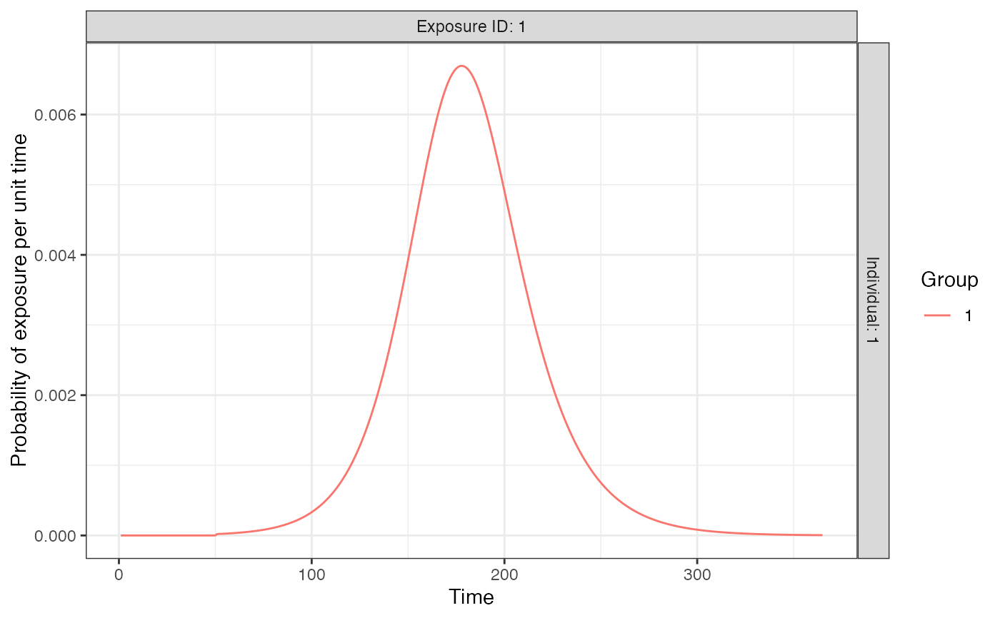

Finds the probability of exposure governed by an SIR model with specified parameters for each exposure type and group combination.
Arguments
- i
individual
- t
time
- x
exposure
- g
group
- foe_pars
Data frame containing SIR model parameters for each group and exposure combination. Variable names: x (exposure ID), g (group ID), name (parameter name), value (parameter value). Parameters needed are: beta (transmission rate), gamma (recovery rate), I0 (per capita infected population seed size), R0 (per capita recovered population seed size) and t0 (seeding time). See example for format.
- demography
A tibble of relevant demographic information for each individual in the simulation.
- time_res
Time steps to solve the ODEs. Set lower for higher accuracy.
- ...
Additional arguments
Examples
times <- seq(0,365,by=1)
## Create FOI (force of infection) from SIR model for one exposure type for one group
n_groups <- 1
n_exposures <- 1
## Create parameters of the simple SIR model for one group and one exposure type
foe_pars <- data.frame(x=1,g=1,name=c("beta","gamma","I0","R0","t0"),values=c(0.2,1/7,1/10000,0,50))
## Solve over all times as example
sir_prob <- exposure_model_sir(1, times, 1, 1, foe_pars)
plot_exposure_model(exposure_model=exposure_model_sir,times=seq(1,365,by=1),
n_groups=1,n_exposures=1,foe_pars=foe_pars)
